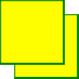
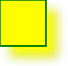
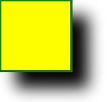
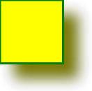
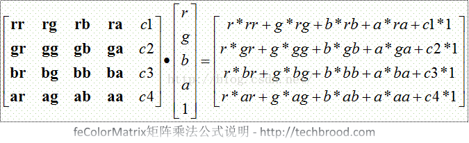

SVG Sombra
<feOffset>
<feOffset>Es un elemento de los filtros SVG, utilizado para crear un efecto de desplazamiento en la imagen, que se puede usar para crear sombras, contornos y otros efectos visuales. Su función es mover cada píxel de la imagen de entrada una cierta distancia en las direcciones horizontal y vertical especificadas, y luego tomar la imagen resultante como salida del efecto de filtro.
Sintaxis básica
<feOffset dx="x-offset" dy="y-offset" />
dxEl atributo define el desplazamiento de la sombra en la dirección horizontal.dyEl atributo define el desplazamiento de la sombra en la dirección vertical.
El siguiente código define un filtro de desplazamiento y luego lo aplica a un rectángulo relleno de rojo, haciendo que el rectángulo presente una sombra con efecto de desplazamiento, con la sombra desplazada 5 píxeles en las direcciones horizontal y vertical respectivamente.
Ejemplo
<!-- Definir filtro de desplazamiento -->
<filter id="offset_filter">
<feOffset dx="5" dy="5" />
</filter>
<!-- Rectángulo que aplica el filtro de desplazamiento -->
<rect x="50" y="50" width="100" height="80" fill="red" filter="url(#offset_filter)" />
</svg>
<feDropShadow>
El efecto de sombra SVG se puede lograr mediante<feDropShadow>elemento, que puede agregar efectos de sombra a los elementos gráficos SVG, haciéndolos ver más tridimensionales y realistas.
Sintaxis básica
<feDropShadow dx="offset-x" dy="offset-y" stdDeviation="blur-radius" flood-color="color" flood-opacity="opacity" />
dxEl atributo define el desplazamiento de la sombra en la dirección horizontal.dyEl atributo define el desplazamiento de la sombra en la dirección vertical.stdDeviationEl atributo define el radio de desenfoque de la sombra, generalmente se usa para controlar el grado de desenfoque de la sombra.flood-colorEl atributo define el color de la sombra, por defecto es negro.flood-opacityEl atributo define la opacidad de la sombra, por defecto es 1 (completamente opaco).
El siguiente código define un filtro de sombra y luego lo aplica a un rectángulo relleno de rojo, haciendo que el rectángulo presente un efecto de sombra gris, con la sombra desplazada 5 píxeles en las direcciones horizontal y vertical, radio de desenfoque de 5 píxeles, color de sombra gris y opacidad de 0.5.
Ejemplo
<!-- Definir filtro de sombra -->
<filter id="shadow_filter">
<feDropShadow dx="5" dy="5" stdDeviation="5" flood-color="gray" flood-opacity="0.5" />
</filter>
<!-- Rectángulo que aplica el filtro de sombra -->
<rect x="50" y="50" width="100" height="80" fill="red" filter="url(#shadow_filter)" />
</svg>
Ejemplo 1
<feOffset> se utiliza para crear efectos de sombra. La idea es tomar un gráfico SVG (imagen o elemento) y moverlo un poco en el plano xy.
El primer ejemplo desplaza un rectángulo (con <feOffset>) y luego mezcla la imagen desplazada en la parte superior (con <feBlend>):

Aquí está el código SVG:
Ejemplo
<defs>
<filter id="f1" x="0" y="0" width="200%" height="200%">
<feOffset result="offOut" in="SourceGraphic" dx="20" dy="20" />
<feBlend in="SourceGraphic" in2="offOut" mode="normal" />
</filter>
</defs>
<rect width="90" height="90" stroke="green" stroke-width="3"
fill="yellow" filter="url(#f1)" />
</svg>
Pruébalo »
Haz clic para ver:Ver archivo SVG。
Análisis del código:
- El atributo id del elemento <filter> define un nombre único para el filtro.
- El atributo de filtro del elemento <rect> se utiliza para vincular el elemento al filtro "f1".
Ejemplo 2
Ahora, la imagen desplazada puede volverse borrosa (con <feGaussianBlur>):

Aquí está el código SVG:
Ejemplo
<defs>
<filter id="f1" x="0" y="0" width="200%" height="200%">
<feOffset result="offOut" in="SourceGraphic" dx="20" dy="20" />
<feGaussianBlur result="blurOut" in="offOut" stdDeviation="10" />
<feBlend in="SourceGraphic" in2="blurOut" mode="normal" />
</filter>
</defs>
<rect width="90" height="90" stroke="green" stroke-width="3"
fill="yellow" filter="url(#f1)" />
</svg>
Pruébalo »
Haz clic para ver:Ver archivo SVG。
Análisis del código:
- El atributo stdDeviation del elemento <feGaussianBlur> define la cantidad de desenfoque.
Ejemplo 3
Ahora, crea una sombra negra:

Aquí está el código SVG:
Ejemplo
<defs>
<filter id="f1" x="0" y="0" width="200%" height="200%">
<feOffset result="offOut" in="SourceAlpha" dx="20" dy="20" />
<feGaussianBlur result="blurOut" in="offOut" stdDeviation="10" />
<feBlend in="SourceGraphic" in2="blurOut" mode="normal" />
</filter>
</defs>
<rect width="90" height="90" stroke="green" stroke-width="3"
fill="yellow" filter="url(#f1)" />
</svg>
Pruébalo »
Haz clic para ver:Ver archivo SVG。
Análisis del código:
- El atributo del elemento <feOffset> se cambia a "SourceAlpha" para usar la imagen residual en el canal Alfa, en lugar de todo el píxel RGBA.
Ejemplo 4
Ahora aplica un color a la sombra:

Aquí está el código SVG:
Ejemplo
<defs>
<filter id="f1" x="0" y="0" width="200%" height="200%">
<feOffset result="offOut" in="SourceGraphic" dx="20" dy="20" />
<feColorMatrix result="matrixOut" in="offOut" type="matrix"
values="0.2 0 0 0 0 0 0.2 0 0 0 0 0 0.2 0 0 0 0 0 1 0" />
<feGaussianBlur result="blurOut" in="matrixOut" stdDeviation="10" />
<feBlend in="SourceGraphic" in2="blurOut" mode="normal" />
</filter>
</defs>
<rect width="90" height="90" stroke="green" stroke-width="3"
fill="yellow" filter="url(#f1)" />
</svg>
Pruébalo »
Haz clic para ver:Ver archivo SVG。
Análisis del código:
- El filtro <feColorMatrix> se utiliza para transformar la imagen desplazada para que se acerque más al color negro. Los tres valores de la matriz '0.2' se multiplican respectivamente por los canales rojo, verde y azul. Reducir sus valores lleva el color a negro (el negro es 0).
Notas
<feOffset>El elemento se puede combinar con otros efectos de filtro, como desenfoque, matriz de color, etc.La cantidad de desplazamiento del efecto de desplazamiento
dx和dypuede ser un valor positivo (indica desplazamiento hacia la derecha o hacia abajo) o un valor negativo (indica desplazamiento hacia la izquierda o hacia arriba).<feOffset>El elemento se usa generalmente para crear efectos de sombra; combinado con otros efectos de filtro puede lograr efectos visuales más complejos.
Mediante el uso de<feOffset>elemento, puedes crear efectos de desplazamiento para elementos gráficos SVG, haciéndolos parecer más vívidos y tridimensionales.
smilenow
257***1053@qq.com
Dirección de referencia
Definición y explicación de la matriz de transformación
La matrix de feColorMatrix es una matriz de 4*5. Las primeras 4 columnas son los coeficientes de escala de los canales de color, la última columna es el desplazamiento constante.

En la fórmula anterior, rr representa el coeficiente red to red, y así sucesivamente. c1~c4 representan el desplazamiento constante.
La primera matriz de 4*5 es la matriz de transformación, la segunda matriz de una sola columna son los valores de píxel del objeto a transformar. La matriz de una sola columna de la derecha es el resultado del producto punto de las matrices 1 y 2.
Esta matriz de transformación parece bastante compleja; en la práctica se suele utilizar una matriz diagonal simplificada, es decir, excepto que rr/gg/bb/aa toman valores distintos de cero, los demás elementos toman el valor 0, lo que se reduce a un simple ajuste independiente de cada canal de color.
Sintaxis de feColorMatrix:
<filter id="f1" x="0%" y="0%" width="100%" height="100%"> <feColorMatrix result="original" id="c1" type="matrix" values="1 0 0 0 0 0 1 0 0 0 0 0 1 0 0 0 0 0 1 0" /> </filter>El valor del tipo del filtro feColorMatrix mencionado anteriormente es matrix. Además, también están saturate (saturación) y hueRotate (rotación de tono), cuyos valores son relativamente simples y no se explicarán aquí.
Obviamente, cuando la matriz de transformación es la matriz diagonal identidad, el resultado de la transformación es igual al valor original.
Podemos intentar ajustar el coeficiente de escala, por ejemplo, estableciendo el valor de rr en 0, es decir, eliminar el contenido del canal de color rojo en la imagen:
Pruébalo »
smilenow
257***1053@qq.com
Dirección de referencia